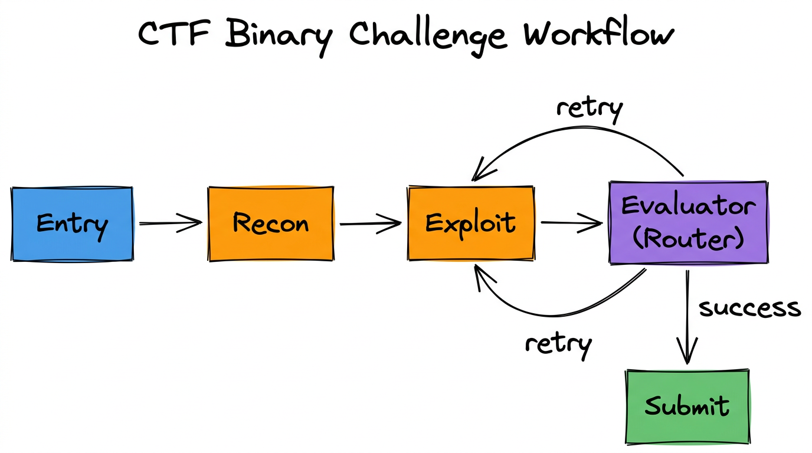

← Back to Agentic Workflow Guide
Chapter 7 Putting It All Together
From blank canvas to running workflow
You now have all the pieces: agents, topology, control flow, information flow, and validation. This final chapter walks through an end-to-end example that combines everything — and covers the output and aggregation patterns that tie the workflow together.
7.1 — End-to-End: CTF Binary Challenge Workflow
Let’s build a complete workflow for a CTF (Capture The Flag) binary exploitation challenge. This is a real-world use case from the iCTF competition, and it touches every concept from Chapters 1–6.
The Task
Given a compiled binary, the system should: analyze its protections, identify vulnerabilities, develop an exploit, extract the flag, and submit it. If the first exploit attempt fails, it should iterate.
Step 1: Choose the Topology
Applying the decision guide from Chapter 3:
- Can one agent handle it? No — too many distinct phases (recon, exploit, submit).
- Sequential phases? Yes — recon before exploit, exploit before submit. → Pipeline.
- Trial-and-error? Yes — exploit may need multiple attempts. → Add cycles.
Result: Pipeline with a cyclic exploit loop.
Step 2: Design the Agents
Applying the principles from Chapter 2:
| Agent | Model | Tools | Max Iterations | Role |
|---|---|---|---|---|
| Recon Agent | GPT-4o | checksec, list_functions, check_strings |
10 | Analyze binary protections and structure |
| Exploit Agent | GPT-4o | decompile, run_payload, read_memory |
30 | Develop and test exploit payloads |
| Evaluator | GPT-4o-mini | None | 0 | Check if exploit succeeded (Router) |
| Submit Agent | GPT-4o-mini | submit_flag |
3 | Extract and submit the flag |
Step 3: Draw the Graph

Edges:
Entry → Recon: Direct edge
Recon → Exploit: Direct edge
Exploit → Evaluator: Direct edge
Evaluator → Exploit: Conditional edge ("retry")
Evaluator → Submit: Conditional edge ("success")Step 4: Define the State
# Shared state schema:
{
"count": "int",
"messages": "Annotated[List[BaseMessage], lambda x, y: x + y]",
"binary_path": "str",
"protections": "str", # Recon output
"vulnerability": "str", # Identified vuln
"exploit_output": "str", # Last exploit attempt result
"exploit_attempts": "int", # How many tries
"flag": "str" # Extracted flag
}Step 5: Write the Prompts
# Recon Agent — System Prompt:
"You are a binary analysis specialist. Analyze the target binary
at {binary_path}. Your job is to:
1. Check security protections (ASLR, NX, canaries, PIE)
2. List all functions and identify entry points
3. Look for suspicious strings (format strings, shell commands)
Report your findings in a structured format."
# Exploit Agent — System Prompt:
"You are an exploit developer. Based on the reconnaissance:
Protections: {protections}
Vulnerability: {vulnerability}
Develop a working exploit. You have tools to decompile functions,
run test payloads, and read memory. If a previous attempt failed:
{exploit_output}
Adjust your approach based on what went wrong."
# Evaluator (Router) — System Prompt:
"You are evaluating whether an exploit attempt succeeded.
Look at the exploit output: {exploit_output}
If the output contains a flag pattern (FLAG{...}), route to Submit.
If the output shows a crash, segfault, or error, route to Exploit
for another attempt."
# Submit Agent — System Prompt:
"Extract the flag from: {exploit_output}
Submit it using the submit_flag tool."7.2 — Output Patterns
How does a workflow produce its final result? There are three common patterns:
Pattern 1: Last Node Output
The simplest pattern. The final node in the pipeline produces the workflow’s output. Whatever it writes to shared state is the result.
# The last node's output is the workflow result:
def submit_agent(global_state):
# ... submit flag ...
return Command(
update={
"flag": "FLAG{s3cur1ty_ftw}", # ← This is the final output
"messages": [response]
},
goto="END"
)Pattern 2: Aggregation Node
A dedicated final node that reads from multiple fields and synthesizes a combined result. Useful for fan-out/fan-in topologies.
# Aggregation node reads multiple results and combines them:
def aggregator(global_state):
static_analysis = global_state.get("static_result", "")
dynamic_analysis = global_state.get("dynamic_result", "")
signature_analysis = global_state.get("signature_result", "")
prompt = f"""Combine these three analyses into a unified report:
Static: {static_analysis}
Dynamic: {dynamic_analysis}
Signatures: {signature_analysis}"""
# LLM synthesizes a coherent summary
response = model.invoke([HumanMessage(content=prompt)])
return Command(
update={"final_report": response.content},
goto="END"
)Pattern 3: Structured Final Output
Use Pydantic structured output on the final node to guarantee the result matches a specific schema. This is the most robust approach for downstream consumption.
# Define the final output schema:
class WorkflowResult(BaseModel):
success: bool
flag: Optional[str]
attempts: int
summary: str
recommendations: List[str]
# The final node uses structured output:
model_with_output = model.with_structured_output(WorkflowResult)
result = model_with_output.invoke(messages)
# result.success → True
# result.flag → "FLAG{s3cur1ty_ftw}"
# result.attempts → 3
# result.summary → "Buffer overflow in check_password..."7.3 — Design Principles Recap
Across all seven chapters, a few principles have appeared repeatedly. Here they are in one place:
1. Start Simple, Add Complexity
Begin with a single agent. If it works, you’re done. If it struggles, identify why (too many tools? too many responsibilities? needs iteration?) and add the minimum structure to solve that problem.
2. One Agent, One Job
Each agent should have a focused role with a clear system prompt and a small set of relevant tools. If an agent’s prompt is longer than a paragraph, consider splitting it.
3. Explicit Over Implicit
Use named state fields over message parsing. Use structured output over free-text parsing. Use template variables over hoping the LLM remembers context.
4. Defense in Depth
Every tool should handle errors. Every loop should have a limit. Every router should validate its decision. Layer your safeguards.
5. Model Selection is an Optimization
Use powerful models (GPT-4o, Claude Sonnet) for complex reasoning. Use cheap models (GPT-4o-mini) for classification, routing, and formatting. Don’t pay for intelligence you don’t need.
7.4 — What’s Next
- Try it yourself: Build the Security Alert Triage workflow from scratch using your preferred agentic framework.
- Read the Agentish guide: If you’re using Agentish, the Agentish Framework guide covers the visual editor, node types, state management, loops, logging, and troubleshooting.
- Join the iCTF: See the iCTF Participants guide to compete in a live agentic CTF competition.
Chapter Summary
- A real workflow combines multiple topologies: pipeline + cycles, router + hierarchy, etc.
- Three output patterns: last node output, aggregation node, and structured final output.
- Five design principles: start simple, one agent per job, explicit over implicit, defense in depth, optimize model selection.